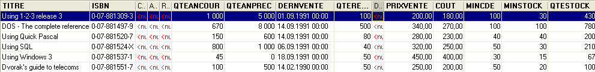
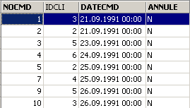
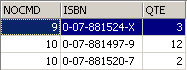
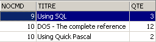
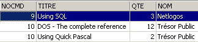
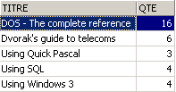

6. SQL المتقدم
6.1. مقدمة
في هذا الفصل، نقدم
- صيغ إضافية لعبارة SELECT تجعلها أمر استعلام قويًا للغاية، خاصةً لاستعلام عدة جداول في آن واحد.
- صيغ موسعة للأوامر التي تمت تغطيتها بالفعل
لتوضيح الطلبات المختلفة، سنعمل مع الجداول التالية المستخدمة لإدارة الطلبات في شركة توزيع كتب صغيرة إلى متوسطة الحجم:
6.1.1. جدول CLIENTS
يخزن معلومات عن عملاء الشركة:
 |

معرف فريد للعميل - المفتاح الأساسي | |
اسم العميل | |
I=فرد، E=شركة، A=حكومة | |
الاسم الأول للفرد | |
اسم الشخص المسؤول عن الاتصال في مقر العميل (في حالة شركة أو وكالة حكومية) | |
عنوان العميل - الشارع | |
المدينة | |
الرمز البريدي | |
الهاتف | |
منذ متى وأنت عميل لدينا؟ | |
نعم (Y) إذا كان العميل مديناً للشركة، ولا (N) في الحالات الأخرى. |
6.1.2. جدول "المنتجات"
يخزن معلومات عن المنتجات المباعة، وهي في هذه الحالة الكتب. وهيكل الجدول كما يلي:

معرف فريد للكتاب (ISBN = الرقم الدولي الموحد للكتاب) - المفتاح الأساسي | |
عنوان الكتاب | |
الرمز الذي يحدد الناشر بشكل فريد | |
اسم المؤلف | |
ملخص الكتاب | |
الكمية المباعة هذا العام | |
الكمية المباعة في العام السابق | |
تاريخ آخر عملية بيع | |
كمية آخر تسليم | |
تاريخ آخر تسليم | |
سعر البيع | |
تكلفة الشراء | |
الحد الأدنى لكمية الطلب | |
الحد الأدنى لمستوى المخزون | |
الكمية المتوفرة |
قد يكون محتواها كما يلي:

6.1.3. جدول ORDERS
يخزن معلومات حول الطلبات التي قدمها العملاء. هيكله كما يلي:

معرف فريد للطلب - المفتاح الأساسي | |
معرف العميل لهذا الطلب - مفتاح خارجي - مرجع إلى CUSTOMERS(ID) | |
تاريخ إدخال هذا الطلب | |
O (نعم) إذا تم إلغاء الطلب و N (لا) في الحالات الأخرى. |

6.1.4. جدول DETAILS
يحتوي على تفاصيل الطلب، أي عناوين وكميات الكتب المطلوبة. وهيكل الجدول كما يلي:

رقم الطلب - مفتاح خارجي يشير إلى عمود NOCMD في جدول COMMANDES | |
رقم الكتاب المطلوب - مفتاح خارجي يشير إلى عمود ISBN في جدول BOOKS | |
الكمية المطلوبة |
قد يكون محتواها كما يلي:

في الأعلى، نرى أن الطلب رقم 3 (NOCMD) يتضمن ثلاثة كتب. وهذا يعني أن العميل طلب ثلاثة كتب في نفس الوقت. يمكن العثور على سجلات هذا العميل في جدول [ORDERS]، حيث نرى أن الطلب رقم 3 تم تقديمه من قبل العميل رقم 5. ويخبرنا جدول [CUSTOMERS] أن العميل رقم 5 هو شركة NetLogos في Segré.
6.2. جملة SELECT
نهدف هنا إلى تعميق فهمنا لعبارة SELECT من خلال تقديم صيغ جديدة لها.
6.2.1. صيغة الاستعلام متعدد الجداول
SELECT العمود1، العمود2، ... من الجدول1، الجدول2، ...، الجدولp WHERE الشرط ترتيب حسب ... | |
الجديد هنا هو أن الأعمدة column1، column2، ... تأتي من جداول متعددة table1، table2، ... إذا كان هناك جدولان يحتويان على أعمدة تحمل نفس الاسم، يتم حل الغموض باستخدام الترميز tablei.columnj. يمكن أن تنطبق الشرط على أعمدة من جداول مختلفة. |
كيف يعمل
يتم إنشاء المنتج الديكارتي للجداول table1 و table2 و... و tablep. إذا كان n_i هو عدد الصفوف في الجدول table_i، فإن الجدول الناتج يحتوي على n₁*n₂*...*n_p صفًا تحتوي على جميع الأعمدة من الجداول المختلفة. | |
يتم تطبيق شرط WHERE على هذا الجدول. وبذلك يتم إنشاء جدول جديد | |
يتم فرز هذا الجدول وفقًا للطريقة المحددة في ORDER. | |
يتم عرض الأعمدة المحددة بعد SELECT. |
أمثلة
سنستخدم الجداول التي عرضناها سابقًا. نريد الاطلاع على تفاصيل الطلبات التي تم تقديمها بعد 25 سبتمبر:
SQL>select details.nocmd,isbn,qte from commandes,details
where commandes.datecmd>'25-sep-91'
and details.nocmd=commandes.nocmd

لاحظ أنه بعد FROM، نقوم بإدراج أسماء جميع الجداول التي نشير إلى أعمدةها. في المثال السابق، تنتمي جميع الأعمدة المحددة إلى جدول DETAILS. ومع ذلك، تشير الشرط إلى جدول ORDERS. ومن هنا تأتي الحاجة إلى إدراج هذا الأخير بعد FROM. غالبًا ما يُطلق على العملية التي تختبر المساواة بين الأعمدة في جدولين مختلفين اسم equijoin.
كان من الممكن أيضًا كتابة استعلام SELECT على النحو التالي:
SQL> select details.nocmd,isbn,qte from commandes
inner join details on details.nocmd=commandes.nocmd
where commandes.datecmd>'25-sep-91'
لنواصل أمثلةنا. نريد الحصول على نفس النتيجة السابقة ولكن مع عنوان الكتاب المطلوب، بدلاً من رقم ISBN الخاص به:
SQL>select commandes.nocmd, articles.titre, details.qte
from commandes,articles,details
where commandes.datecmd>'25-sep-91'
and details.nocmd=commandes.nocmd
and details.isbn=articles.isbn

يتم الحصول على نفس النتيجة باستخدام استعلام SQL التالي، الذي يكون أقل قابلية للقراءة:
SQL> select details.nocmd,articles.titre,details.qte from details
inner join commandes on details.nocmd=commandes.nocmd
inner join articles on details.isbn=articles.isbn
where commandes.datecmd>'25-sep-91'
فيما سبق، يتم تنفيذ عمليتي ربط داخلي مع جدول [DETAILS]:
- أحدهما مع جدول [ORDERS] للوصول إلى تاريخ طلب كتاب
- والآخر مع جدول [ARTICLES] للوصول إلى عنوان الكتاب المطلوب
نريد أيضًا اسم العميل الذي قدم الطلب:
SQL>select commandes.nocmd, articles.titre, qte ,clients.nom
from commandes,details,articles,clients
where commandes.datecmd>'25-sep-91'
and details.nocmd=commandes.nocmd
and details.isbn=articles.isbn
and commandes.idcli=clients.id

نريد أيضًا تواريخ الطلبات وعرض هذه التواريخ بترتيب تنازلي:
SQL>select commandes.nocmd, commandes.datecmd, articles.titre, qte ,clients.nom
from commandes,details,articles,clients
where commandes.datecmd>'25-sep-91'
and details.nocmd=commandes.nocmd
and details.isbn=articles.isbn
and commandes.idcli=clients.id
order by commandes.datecmd descending

فيما يلي بعض القواعد التي يجب اتباعها عند إنشاء عمليات الربط:
- بعد SELECT، قم بإدراج الأعمدة التي تريد عرضها. إذا كان العمود موجودًا في جداول متعددة، فضع اسم الجدول قبله.
- بعد FROM، قم بإدراج جميع الجداول التي سيتم الاستعلام عنها بواسطة جملة SELECT، أي الجداول التي تحتوي على الأعمدة المدرجة بعد SELECT و WHERE.
6.2.2. الربط الذاتي
نريد العثور على الكتب التي يزيد سعر بيعها بالتجزئة عن سعر كتاب "Using SQL":
SQL>select a.titre from articles a, articles b
where b.titre='Using SQL'
and a.prixvente>b.prixvente

الجدولان المستخدمان في عملية الربط متطابقان هنا: جدول articles. ولتمييزهما، نُطلق عليهما أسماء مستعارة: articles a و articles b. الاسم المستعار للجدول الأول هو a، واسم المستعار للجدول الثاني هو b. ويمكن استخدام هذه الصيغة حتى لو كانت الجداول مختلفة. وعند استخدام اسم مستعار، يجب استخدامه في جميع أجزاء جملة SELECT بدلاً من الجدول الذي يشير إليه.
6.2.3. الربط الخارجي
نريد تحديد العملاء الذين أجروا عملية شراء في سبتمبر، مع تاريخ الطلب. يتم عرض العملاء الآخرين بدون هذا التاريخ:
SQL>select clients.nom,commandes.datecmd from clients
left outer join commandes on clients.id=commandes.idcli
where datecmd between '01-sep-91' and '30-sep-91'

من المفاجئ هنا أننا لا نحصل على النتيجة الصحيحة. كان من المفترض أن نحصل على جميع العملاء الموجودين في جدول [CLIENTS]، ولكن هذا لم يحدث. عندما نفكر في كيفية عمل الارتباط الخارجي، ندرك أن العملاء الذين لم يقوموا بأي عملية شراء قد تمت مطابقتهم مع صف فارغ في جدول ORDERS وبالتالي مع تاريخ فارغ (قيمة NULL في مصطلحات SQL). هذا التاريخ لا يفي بالشرط المحدد للتاريخ، لذلك لا يتم عرض العميل المقابل. دعونا نجرب شيئًا آخر:
SQL>select clients.nom,commandes.datecmd from clients
left outer join commandes on clients.id=commandes.idcli
where (commandes.datecmd between '01-sep-91' and '30-sep-91')
or (commandes.datecmd is null)

هذه المرة، نحصل على الإجابة الصحيحة لسؤالنا.
6.2.4. الاستعلامات المتداخلة
SELECT عمود[أعمدة] FROM جدول[جداول] WHERE تعبير عامل الاستعلام ترتيب حسب ... | |
الاستعلام هو عبارة SELECT التي تُرجع مجموعة من 0 أو 1 أو أكثر من القيم. ثم لدينا شرط WHERE من النوع التعبير المشغل (val1، val2، ...، vali) يجب أن يكون التعبير و vali من نفس النوع. إذا أعاد الاستعلام قيمة واحدة، فإننا نختزل الشرط إلى النوع التعبير المشغل القيمة التي نعرفها جيدًا. إذا أعاد الاستعلام قائمة من القيم، فيمكننا استخدام العوامل التالية:
التعبير IN (val1, val2, ..., vali): صحيح إذا كان التعبير يساوي أحد العناصر في القائمة vali.
عكس IN
يجب أن يسبقها =، !=، >، >=، <، <= التعبير >= ANY (val1, val2, .., valn): صحيح إذا كان التعبير >= إحدى القيم vali في القائمة
يجب أن يسبقه =، !=، >، >=، <، <= التعبير >= ALL (القيمة 1، القيمة 2، ..، القيمة n): صحيح إذا كان التعبير >= جميع القيم الصالحة في القائمة
الاستعلام: صحيح إذا أعاد الاستعلام صفًا واحدًا على الأقل. |
أمثلة
لنعد إلى السؤال الذي تم حله بالفعل باستخدام عملية ربط متساوي: اعرض العناوين التي يزيد سعر بيعها عن سعر كتاب "Using SQL".
SQL>select titre from ARTICLES
where prixvente > (select prixvente from ARTICLES where titre='Using SQL')

يبدو هذا الحل أكثر بديهية من الـ equijoin. نقوم بتصفية أولية باستخدام SELECT، ثم تصفية ثانية على المجموعة الناتجة. يمكننا إجراء عدة تصفيات متتالية بهذه الطريقة.
نريد العثور على العناوين التي يزيد سعر بيعها عن متوسط سعر البيع:

من هم العملاء الذين طلبوا العناوين التي أعادها الاستعلام السابق؟
SQL>select distinct idcli from COMMANDES,DETAILS
where DETAILS.isbn in
(select isbn from ARTICLES where prixvente
> (select avg(prixvente) from ARTICLES))
and COMMANDES.nocmd=DETAILS.nocmd

شرح
- نختار من جدول DETAILS رموز ISBN الموجودة بين الكتب التي يزيد سعرها عن متوسط سعر الكتاب.
- في الصفوف المحددة في الخطوة السابقة، لا يوجد معرف العميل (IDCLI). يمكن العثور عليه في جدول ORDERS. يتم إنشاء الارتباط بين الجدولين عبر رقم الطلب (NOCMD)، ومن ثم شرط الربط ORDERS.nocmd=DETAILS.nocmd.
- قد يكون عميل واحد قد اشترى أحد الكتب ذات الصلة عدة مرات، وفي هذه الحالة سيظهر رمز IDCLI الخاص به عدة مرات. لتجنب ذلك، نضع الكلمة الرئيسية DISTINCT بعد SELECT. تعمل DISTINCT عمومًا على إزالة التكرارات من الصفوف التي يتم إرجاعها بواسطة استعلام SELECT.
- لاسترداد اسم العميل، سنحتاج إلى إجراء ربط إضافي بين الجدولين ORDERS و CUSTOMERS، كما هو موضح في الاستعلام التالي.
SQL> select distinct CLIENTS.nom from COMMANDES,DETAILS,CLIENTS
where DETAILS.isbn in
(select isbn from ARTICLES where prixvente
> (select avg(prixvente) from ARTICLES))
and COMMANDES.nocmd=DETAILS.nocmd
and COMMANDES.IDCLI=CLIENTS.ID

ابحث عن العملاء الذين لم يقدموا أي طلب منذ 24 سبتمبر:
SQL>select nom from CLIENTS
where clients.id not in
(select distinct commandes.idcli from commandes where datecmd>='24-sep-91')

لقد رأينا أنه يمكن تصفية الصفوف بطرق أخرى غير استخدام جملة WHERE: وذلك باستخدام جملة HAVING بالاقتران مع جملة GROUP BY. تقوم جملة HAVING بتصفية مجموعات من الصفوف.
تمامًا كما هو الحال مع جملة WHERE، فإن بناء الجملة
HAVING expression opérateur requête
ممكنة، مع القيد المذكور سابقًا بأن التعبير يجب أن يكون أحد التعبيرات expri في الجملة
GROUP BY expr1, expr2, ...
أمثلة
ما هي أرقام مبيعات الكتب التي يزيد سعرها عن 200 فرنك؟
أولاً، دعونا نعرض الكميات المباعة حسب العنوان:
SQL>select ARTICLES.titre,sum(qte) QTE from ARTICLES, DETAILS
where DETAILS.isbn=ARTICLES.isbn
group by titre

الآن، دعونا نقوم بتصفية العناوين:
SQL> select ARTICLES.titre,sum(qte) QTE from ARTICLES, DETAILS
where DETAILS.isbn=ARTICLES.isbn
group by titre
having titre in (select titre from ARTICLES where prixvente>200)

ربما كان من الأوضح أن نكتب:
SQL>select ARTICLES.titre,sum(qte) QTE from ARTICLES, DETAILS
where DETAILS.isbn=ARTICLES.isbn
and ARTICLES.prixvente>200
group by titre

6.2.5. الاستعلامات المتداخلة
في حالة الاستعلامات المتداخلة، يوجد استعلام رئيسي (الاستعلام الخارجي) واستعلام فرعي (الاستعلام الداخلي). لا يتم تقييم الاستعلام الرئيسي إلا بعد تقييم الاستعلام الفرعي بالكامل.
تتميز الاستعلامات المترابطة بنفس الصيغة، مع الاختلاف الطفيف التالي: يقوم الاستعلام الفرعي بإجراء عملية ربط على جدول الاستعلام الأصلي. في هذه الحالة، يتم تقييم زوج الاستعلامين الأصلي والفرعي بشكل متكرر لكل صف في الجدول الأصلي.
مثال
لنعد إلى المثال الذي نريد فيه الحصول على أسماء العملاء الذين لم يقدموا أي طلبات منذ 24 سبتمبر:
SQL>
select nom from clients
where not exists
(select idcli from commandes
where datecmd>='24-sep-91'
and commandes.idcli=clients.id)

يعمل الاستعلام الأصلي على جدول العملاء. ويقوم الاستعلام الفرعي بإجراء ربط بين جدولي العملاء والطلبات. وبالتالي، فإن هذا استعلام مترابط. بالنسبة لكل صف في جدول العملاء، يتم تشغيل الاستعلام الفرعي: حيث يبحث عن معرف العميل في الطلبات التي تم تقديمها بعد 24 سبتمبر. وإذا لم يعثر على أي شيء (not exists)، يتم عرض اسم العميل. ثم ينتقل إلى الصف التالي في جدول العملاء.
6.2.6. معايير كتابة جملة SELECT
لقد رأينا، في عدة مناسبات، أنه من الممكن الحصول على نفس النتيجة باستخدام جمل SELECT مختلفة. لنأخذ مثالاً: عرض العملاء الذين قدموا طلبات:
الانضمام

الاستعلامات المتداخلة
يعطي نفس النتيجة.
الاستعلامات المرتبطة
SQL>
select nom from clients
where exists (select * from commandes where commandes.idcli=clients.id)
يعطي نفس النتيجة.
يقترح المؤلفان كريستيان ماري وغاي ليدانت، في كتابهما "SQL: Introduction, Programming, and Mastery"، بعض معايير الاختيار:
الأداء
لا يعرف المستخدم كيف "تتمكن" نظام إدارة قواعد البيانات (DBMS) من العثور على النتائج التي يطلبها. ولذلك، فإنه من خلال التجربة فقط سيكتشف أن استعلامًا ما أكثر كفاءة من آخر. ويؤكد ماري وليدانت من واقع خبرتهما أن الاستعلامات المترابطة تبدو عمومًا أبطأ من الاستعلامات المتداخلة أو عمليات الربط.
الصياغة
غالبًا ما تكون الصياغة باستخدام الاستعلامات المتداخلة أكثر قابلية للقراءة وبديهية من عمليات الربط. ومع ذلك، فهي ليست قابلة للاستخدام دائمًا. يجب ملاحظة نقطتين على وجه الخصوص:
- يجب إدراج الجداول التي تحتوي على الأعمدة المحددة في جملة SELECT (SELECT col1, col2, ...) بعد الكلمة الرئيسية FROM. ثم يتم إجراء الضرب الديكارتي لهذه الجداول، وهو ما يُعرف باسم عملية الربط.
- عندما يعرض الاستعلام نتائج من جدول واحد، ويستلزم تصفية صفوف ذلك الجدول الرجوع إلى جدول آخر، يمكن استخدام الاستعلامات المتداخلة.
6.3. امتدادات بناء الجملة
للتسهيل، قدمنا في الغالب صيغًا مختصرة للأوامر المختلفة. في هذا القسم، نقدم صيغها الموسعة. وهي واضحة بذاتها لأنها مشابهة لتلك الخاصة بأمر SELECT الذي تمت دراسته على نطاق واسع.
INSERT
INSERT INTO table (col1, col2, ...) VALUES (val1, val2, ...) | |
INSERT INTO table (col1, col2, ..) (query) | |
تم عرض هاتين الصيغتين |
DELETE
حذف من الجدول حيث الشرط | |
هذه الصيغة معروفة جيدًا. لاحظ أن الشرط قد يحتوي على استعلام يستخدم صيغة WHERE تعبير عامل (استعلام) |
UPDATE
تحديث الجدول SET col1=expr1, col2=expr2, ... WHERE الشرط | |
تم عرض هذه الصيغة بالفعل. لاحظ أن الشرط قد يحتوي على استعلام يستخدم صيغة WHERE تعبير عامل (استعلام) |
تحديث الجدول SET (col1, col2, ..) = query1, (cola, colb, ..) = query2, ... WHERE الشرط | |
قد تأتي القيم المخصصة للأعمدة المختلفة من استعلام. |